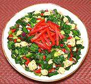

|
Garden SaladFrance - Salade de Jardin | ||||
| Makes: Effort: Sched: DoAhead: |
4-1/4 # *** 1 hr Yes |
A very fine salad with a good balance of flavors and textures - and it's sturdy enough for buffet service or when it needs to be made ahead. | |||
|
1-1/4 1 10 14 7 14 1 1 1 1 ------ 1/3 1/3 1/2 1/4 ------ 8 |
# T oz oz oz oz # t t t --- c c t t --- oz |
Cauliflower Salt Onion, red Cucumbers (1) Bell Pepper, grn Bell Pepper, red Spinach, fresh Thyme, dry Marjoram dry Paprika --Dressing (2) Olive Oil (3) Wine Vinegar (4) Salt Pepper -- Garnish Bell Pepper, red |
Yes, an hour is quite long for making a salad - but you're getting more than 4 pounds of salad, enough for a whole bunch of hungry people. Make - (1 hour)
|